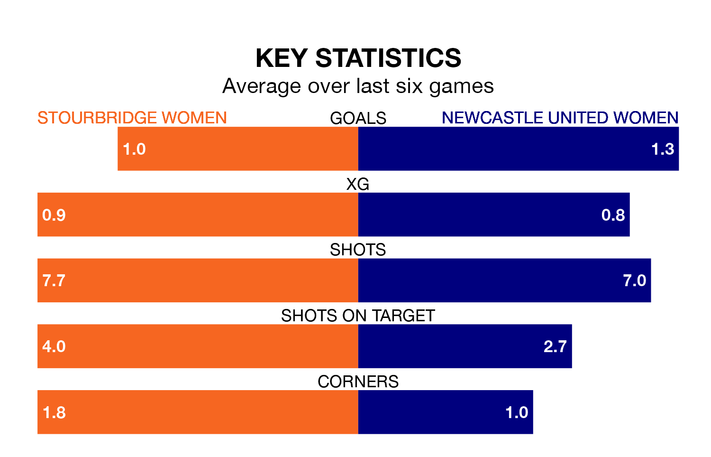

Mid-season relegation candidates Stourbridge Women face a challenge against high-flying Newcastle United Women on Sunday.
Stourbridge Women are ninth in the Women's National League Premier Division – North table, and have picked up four wins and four draws in their 15 games to date.
Newcastle United, meanwhile, are top of the standings with 40 points, having won 12 and drawn four of their first 16 matches.
With 42 goals in 16 games so far this season, Newcastle United are the league's highest scorers with 2.6 goals per game. And they are conceding fewer than average, letting in five goals at a rate of 0.3 per game.
Stourbridge, meanwhile, are below average scorers, with 1.5 goals per game, compared to a league average of 1.7. They have conceded 2.9 goals per game.
The hosts are in mixed form in the Women's National League Premier Division North, with two wins and a draw from their last six games.
With three wins and three draws over that period, the away team's form is better – they have taken 12 points from 18, compared to Stourbridge's seven.
Stourbridge's last match was on February 11, a 4-1 loss against Stoke City Women.
Newcastle United beat Stoke City Women 4-1 last time out, on March 3.
Updated: 09:34 (UTC), 08/03/24